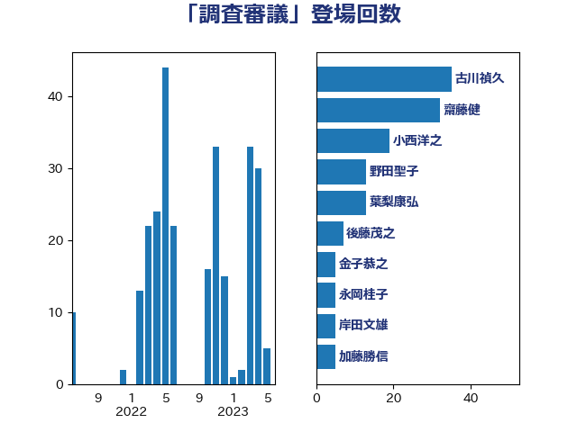

単語「調査審議」

| 古川禎久 | 自由民主党 | 35 回 |
| 齋藤健 | 自由民主党 | 32 回 |
| 小西洋之 | 立憲民主党 | 19 回 |
| 野田聖子 | 自由民主党 | 13 回 |
| 葉梨康弘 | 自由民主党 | 13 回 |
| 後藤茂之 | 自由民主党 | 7 回 |
| 金子恭之 | 自由民主党 | 5 回 |
| 永岡桂子 | 自由民主党 | 5 回 |
| 岸田文雄 | 自由民主党 | 5 回 |
| 加藤勝信 | 自由民主党 | 5 回 |
| 田村智子 | 日本共産党 | 4 回 |
| 櫻井周 | 立憲民主党 | 3 回 |
| 塩川鉄也 | 日本共産党 | 3 回 |
| 斉藤鉄夫 | 公明党 | 2 回 |
| 鰐淵洋子 | 公明党 | 1 回 |
| 門山宏哲 | 自由民主党 | 1 回 |
| 長友慎治 | 国民民主党 | 1 回 |
| 赤池誠章 | 自由民主党 | 1 回 |
| 萩生田光一 | 自由民主党 | 1 回 |
| 自見はなこ | 自由民主党 | 1 回 |
| 笠井亮 | 日本共産党 | 1 回 |
| 田畑裕明 | 自由民主党 | 1 回 |
| 田嶋要 | 立憲民主党 | 1 回 |
| 田中英之 | 自由民主党 | 1 回 |
| 牧山ひろえ | 立憲民主党 | 1 回 |
| 津島淳 | 自由民主党 | 1 回 |
| 河野太郎 | 自由民主党 | 1 回 |
| 松本剛明 | 自由民主党 | 1 回 |
| 本庄知史 | 立憲民主党 | 1 回 |
| 末松信介 | 自由民主党 | 1 回 |
| 川田龍平 | 立憲民主党 | 1 回 |
| 小沼巧 | 立憲民主党 | 1 回 |
| 小池晃 | 日本共産党 | 1 回 |
| 寺田稔 | 自由民主党 | 1 回 |
| 宮崎政久 | 自由民主党 | 1 回 |
| 安江伸夫 | 公明党 | 1 回 |
| 吉田はるみ | 立憲民主党 | 1 回 |
| 吉川沙織 | 立憲民主党 | 1 回 |
| 加田裕之 | 自由民主党 | 1 回 |
| 中野洋昌 | 公明党 | 1 回 |